File d’attente, un petit exemple¶
Psychokinèse, les ampoules grillent à distance
Petite histoire¶
Cet énoncé s’inspire du livre Devenez sorciers, devenez savants de Georges Charpak et Henri Broch dont est tiré l’extrait suivant.
Le présentateur se tourne vers la caméra principale, et d’un air très sérieux et enjôleur, regarde le téléspectateur droit dans les yeux en déclarant : Allez-y ! Allumez cinq ou six lampes à côté de vous. Puis il se tourne vers le médium et demande : Vous pensez réellement pouvoir le faire ? Après quelques moments d’hésitation, le mage se prononce : J’espère avoir suffisamment de concentration ce soir, mais je ne suis pas dans les conditions vraiment idéales ; pour produire ce genre de phénomène à distance, d’habitude, je me retire pendant plusieurs jours dans une solitude totale et une profonde obscurité, après un jeûne strict.
Si jamais il échoue, le public le mettra au compte des circonstances et non pas de ces compétences. Et, pourtant, le médium n’échoue pas. Des ampoules grillent chez les téléspectateurs qui regardent cette émission. Ils font part au standard téléphonique de la chaîne qui diffuse en direct cet extraordinaire moment de culture. Le médium a donc bien réussi - comme il le prétendait -, en concentrant sa puissance spirituelle sur la matière, à griller des ampoules électriques à distance.
Supposons que cette émission soit suivie par environ un million de téléspectateurs et qu’elle dure une heure ou plus. Cela signifie qu’environ cinq à six millions d’ampoules ont été allumées pendant une heure ou plus. Supposons que ce nombre soit de deux millions.
La durée de vie moyenne d’une ampoule à incandescence est de mille heures. Ce qui signifie que, pendant la durée de l’émission, il y aura environ deux milles lampes grillées.
Un peu de théorie¶
Ce problème ressemble à un problème de files d’attente. Ce dernier
consiste à déterminer un nombre adéquat de guichets en fonction de
la vitesse de remplissage d’une file d’attente afin de limiter le
temps d’attente. On désigne souvent cette problématique par un sigle
du type . Le premier  signifie qu’on suppose que la
probabilité que
signifie qu’on suppose que la
probabilité que  personnes arrivent pendant une durée 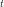
suit une loi de Poisson de paramètre
personnes arrivent pendant une durée 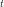
suit une loi de Poisson de paramètre  .
Le second signifie qu’on suppose que le temps de
traitement d’une personne par un guichetier suit une loi exponentielle de
paramètre
.
Le second signifie qu’on suppose que le temps de
traitement d’une personne par un guichetier suit une loi exponentielle de
paramètre  .
.  désigne le nombre de guichets. Pour de
tels problèmes, on cherche à déterminer la probabilité que le
système (file d’attente + guichets) contienne personnes.
De cette probabilité, on peut déduire par exemple le temps d’attente
moyen pour une personne qui entre dans la file d’attente. On
suppose que le système est stationnaire, les probabilités ne dépendent
pas du temps.
désigne le nombre de guichets. Pour de
tels problèmes, on cherche à déterminer la probabilité que le
système (file d’attente + guichets) contienne personnes.
De cette probabilité, on peut déduire par exemple le temps d’attente
moyen pour une personne qui entre dans la file d’attente. On
suppose que le système est stationnaire, les probabilités ne dépendent
pas du temps.
Définition D1 : loi de Poisson et loi exponentielle
Si une variable 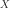 suit une loi de Poisson de
paramète , elle a pour densité :
Si une variable suit une loi exponentielle de paramètre , elle a pour densité :
File d’attente, cas M/M/1¶
On s’intéresse d’abord à un système 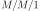. Il n’y a donc qu’un
seul guichet.  est le nombre moyen d’arrivée par unité
de temps tandis que est le nombre moyen de clients
traités par unité de temps. On suppose également que .
Dans le cas contraire, la file d’attente devient infinie. On désigne par
la probabilité que la file d’attente contiennent
personne. Que vaut cette probabilité à l’instant
est le nombre moyen d’arrivée par unité
de temps tandis que est le nombre moyen de clients
traités par unité de temps. On suppose également que .
Dans le cas contraire, la file d’attente devient infinie. On désigne par
la probabilité que la file d’attente contiennent
personne. Que vaut cette probabilité à l’instant  ?
?
On considère que pendant la durée , au plus une personne
peut s’ajouter à la file d’attente et au plus une personne peut
être traitée par un guichetier. Les autres cas sont négligeables.
On désigne par 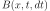 le fait qu’une personne quitte
un guichet pendant les instants et  sachant
qu’elle est arrivée au guichet à l’instant
sachant
qu’elle est arrivée au guichet à l’instant  . On cherche à
déterminer la probabilité . On peut dire aussi
que 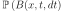 est la probabilité que le temps de traitement
d’une personne est inférieur à 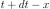 sachant qu’il est
supérieur à . Si est une variable de durée
suivant une loi exponentielle, alors :
. On cherche à
déterminer la probabilité . On peut dire aussi
que 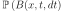 est la probabilité que le temps de traitement
d’une personne est inférieur à 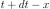 sachant qu’il est
supérieur à . Si est une variable de durée
suivant une loi exponentielle, alors :
(1)¶
Cette probabilité ne dépend ni de , ni de .
En ce qui concerne les arrivées, la probabilité qu’une personne arrive
pendant les instants et ne dépend pas du
passé et suit une loi de Poisson de paramètre .
Cette constation et l’équation (1) nous permettent d’écrire que :
(2)¶
De plus, pendant la durée , quatre cas sont possibles :
Une personne peut arriver sans qu’aucune ne parte d’un guichet.
Une personne peut partir d’un guichet sans qu’aucune autre n’arrive.
Une personne peut arriver et une autre partir d’un guichet.
Aucune personne n’arrive et aucune ne part d’un guichet.
Ces quatre cas permettent d’écrire la relation suivante :
(3)¶
On néglige les termes du second degré en :
Cette relation n’est vraie que lorsque  , lorsque
, aucune personne déjà présente ne peut
être traitée par un guichetier, on a donc :
, lorsque
, aucune personne déjà présente ne peut
être traitée par un guichetier, on a donc :
Comme le système est stationnaire, toutes les dérivées sont nulles. Les probabilités ne dépendent pas du temps. Ceci donne les relations suivantes :
(4)¶
On vérifie par récurrence que :
Il reste à déterminer . Or, comme , on obtient que frac{p_0}{ 1 - frac{lambda}{mu}} = 1 Longleftrightarrow p_0 = 1 - frac{lambda}{mu}.
Exemple :
On suppose qu’un médecin traite en moyenne quatre patients par heure tandis qu’il accepte trois rendez-vous par heure. Donc 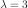 et . Le nombre moyen de patients dans sa salle d’attente est donné par :
Il y a donc en moyenne trois personnes dans la salle d’attente de ce médecin. Comme le temps moyen de traitement de chacun est 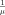, le temps moyen d’attente d’un patient arrivant dans la salle d’attente est . Ce temps est égal à trois quarts d’heure pour cet exemple.
File d’attente, cas M/M/S¶
Le système contient dorénavant guichets, on suppose que la vitesse
de traitement des clients est commune à tous les
guichets. On cherche tout d’abord la probabilité qu’une
personne s’en aille parmi les  qui occupent un guichet. On désigne par
variables indépendantes suivant une loi
exponentielle de paramètre , pendant un temps ,
la probabilité qu’une personne parmi quitte un guichet est :
qui occupent un guichet. On désigne par
variables indépendantes suivant une loi
exponentielle de paramètre , pendant un temps ,
la probabilité qu’une personne parmi quitte un guichet est :
Pour déterminer les probabilités , on applique le même raisonnement que pour un système en distinguant les cas et . On adapte la récurrence donnée par le système d’équations (4) au cas :
(5)¶
On suppose que afin que la file d’attente ne devienne infinie. Comme pour un système , ces formules de récurrences et le fait que permet de déduire que :

Ces calculs sont utilisés pour optimiser le nombre de guichets. Chaque guichetier a un coût qui doit être comparé avec le coût associé au temps d’attente des clients. Ces résultats sont extraits du livre [Faure2000].
La théorie des files d’attente remonte aux premiers travaux de K. Erlang (1917), sur le calcul du nombre d’organes de chaque type à installer dans un central téléphonique automatique. Développée aussi par Engset (1918), cette théorie s’est amplifiée sous l’impulsion de nombreux chercheurs (E. Borel, D. Kendall, A. Kolmogorov, Khintchine, LC. Palm, F. Pollaczek, L. Feller, …). Les informaticiens l’utilisent notamment pour l’évaluation de performances, à titre prévisionnel, des systèmes ou des réseaux informatiques.
Retour aux ampoules¶
La durée de traitement d’un client fait penser à la durée de vie
d’une ampoule. Les lampes font office de guichets tandis que le rôle des
clients est joué par des lumières. Toutefois, ce n’est pas le temps
d’attente moyen ni la longueur moyenne de la file d’attente qui nous
intéresse mais, en quelque sorte, le nombre de clients qui sont traités
pendant une durée  . En fait, plus exactement, c’est le nombre
de guichets qui auront traités au moins un client pendant une durée
qui nous intéresse. Il correspond exactement au nombre d’ampoules
qui vont griller pendant cette même période . Il reste à définir
ce qu’est une file d’attente d’ampoules et surtout son paramètre .
. En fait, plus exactement, c’est le nombre
de guichets qui auront traités au moins un client pendant une durée
qui nous intéresse. Il correspond exactement au nombre d’ampoules
qui vont griller pendant cette même période . Il reste à définir
ce qu’est une file d’attente d’ampoules et surtout son paramètre .
Lorsqu’une ampoule grille, elle est a priori changée dans les plus brefs
délais, comme si la file d’attente des ampoules était infinie. Ceci
signifie que , configuration qui sort du champ
d’application des files d’attente . Le paramètre
n’a a priori aucun rôle à jouer. On peut néanmoins
s’inspirer de la méthode développée dans les paragraphes précédants pour
aborder le problème des ampoules.
On suppose que la durée de vie d’une ampoule suit toujours une loi exponentielle
de paramètre et qu’il y en a exactement
qui brillent en même temps. On note la probabilité que
ampoules aient grillées à l’instant .
Si  est le nombre d’ampoules grillées à l’instant :
. Cette fonction n’est plus stationnaire
et décroît avec le temps à partir d’un certain moment. Plus on avance dans le
temps, plus le nombre d’ampoules grillées augmente. Par conséquent, la
probabilité qu’il y ait ampoules grillées augmente tout d’abord puis,
à partir d’un moment , elle diminue.}. On utilise un raisonnement
similaire à celui qui a permis d’écrire les équations
(2), (3) pour obtenir :
est le nombre d’ampoules grillées à l’instant :
. Cette fonction n’est plus stationnaire
et décroît avec le temps à partir d’un certain moment. Plus on avance dans le
temps, plus le nombre d’ampoules grillées augmente. Par conséquent, la
probabilité qu’il y ait ampoules grillées augmente tout d’abord puis,
à partir d’un moment , elle diminue.}. On utilise un raisonnement
similaire à celui qui a permis d’écrire les équations
(2), (3) pour obtenir :
(6)¶
On connaît la fonction puisqu’elle correspond à
la probabilité qu’aucune des ampoules n’ait grillé
depuis l’instant~0 jusqu’à l’instant , par conséquent :
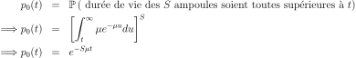
L’équation (6) permet de définir une suite d’équations différentielles du premier degré :
(7)¶
On peut donc calculer par récurrence la suite de fonction . La solution de l’équation différentielle homogène est . On utilise la méthode de la variation de la constante en posant . On aboutit à l’équation :
Pour 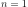, on obtient
.
Par conséquent, 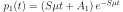.
On sait que 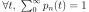 mais cela
ne permet pas de déterminer la constante . Néanmoins, en
faisant tendre 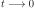, nécessairement 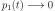.
Par conséquent : et  . On pose maintenant .
La résolution de l’équation différentielle (7) pour
. On pose maintenant .
La résolution de l’équation différentielle (7) pour  aboutit à :
aboutit à :
De même, en faisant tendre , on démontre que . En poursuivant ce raisonnement, par récurrence, on démontre que :
(8)¶
et d’après l’équation
(8), la variable aléatoire
suit une loi de Poisson de paramètre .  est aussi appelé processus de Poisson.
L’espérance de est égale à 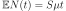.
Pendant une durée , le nombre moyen d’ampoules grillées est :
est aussi appelé processus de Poisson.
L’espérance de est égale à 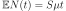.
Pendant une durée , le nombre moyen d’ampoules grillées est :
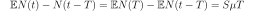
Ce nombre est indépendant du temps .
Application numérique¶
Pour des ampoules d’une durée de 1000 heures, le paramètre 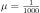, 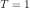. S’il y a deux millions d’ampoules, le nombre moyen d’ampoules grillées par heure est 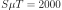. On retrouve le résultat énoncé.
Programme informatique¶
La durée de vie de chaque ampoule suit une loi exponentielle de paramètre
. Il faut donc simuler une telle variable dont la fonction
de répartition est .
On utilise pour cela une propriété qui découle de la fonction
de répartition. On note .
Cette fonction vérifie .
Or si  est une variable aléatoire uniforme sur
est une variable aléatoire uniforme sur
 , alors la variable
, alors la variable  suit la loi exponentielle avec pour paramètre.
Effectivement, 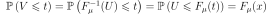.
La fonction de répartition de la variable 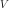 est ,
est donc une loi exponentielle de paramètre .
La première fonction simule une variable exponentielle de paramètre :
suit la loi exponentielle avec pour paramètre.
Effectivement, 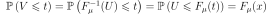.
La fonction de répartition de la variable 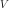 est ,
est donc une loi exponentielle de paramètre .
La première fonction simule une variable exponentielle de paramètre :
<<<
import math
import random
def generate_expo(mu):
x = 0
while x == 0:
x = random.random()
y = -math.log(1 - x) / mu
return y
print(generate_expo(2))
>>>
0.13929932148804938
Le module random propose aussi une fonction
qui simule automatiquement une variable exponentielle.
<<<
import random
def generate_expo(mu):
return random.expovariate(mu)
print(generate_expo(2))
>>>
0.08123574845485705
Pour réaliser cette simulation, on suppose qu’on a un tableau de
ampoules. Chaque case de ce tableau contient la durée de
vie restante d’une ampoule, simulée selon une loi exponentielle.
Au départ, toutes les durées de vie sont nulles. On considère qu’à
chaque itération, une heure passe. Lors de chaque itération, pour chaque
ampoule, on vérifie sa durée de vie restante. Si celle-ci est nulle, on
la remplace par une autre dont on choisit aléatoirement la durée de vie
(arrondie à l’entier le plus proche). Si la durée de vie n’est pas
nulle, on la diminue d’une heure. A chaque itération, on compte le nombre
d’ampoules grillées pour en faire la moyenne au bout de itérations.
Pour effectuer cette simulation, les valeurs choisies sont :
Le programme suivant réalise cette simulation. On calcule la moyenne du nombre d’ampoules grillées par heure sur les 500 itérations excepté la première pour laquelle toutes les ampoules sont grillées - configuration aberrante ou tout du moins très peu probable -. La valeur obtenue est proche de .
Bibliographie¶
Précis de recherche opérationnelle, 5ième édition, Robert Faure, Bernard Lemaire, Christophe Picouleau, Dunod